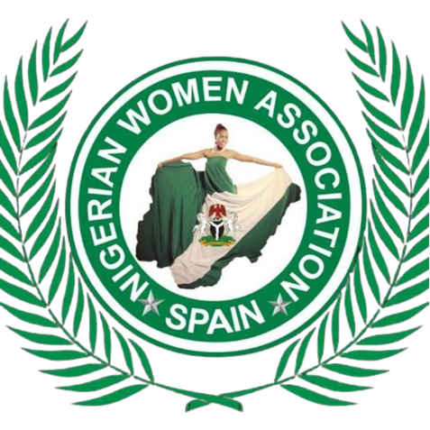

<footer class="site-footer"><div class="container footer-main"><div class="footer-about"><a class="brand footer-brand" href="index.html"><span><strong>NWAMS</strong><small>Nigerian Women Association<br>Madrid, Spain</small></span></a><p>Empowering women and strengthening communities through compassion, dignity and practical action.</p></div><div><h3>Explore</h3><a href="about.html">About us</a><a href="what-we-do.html">What we do</a><a href="projects.html">Our projects</a><a href="gallery.html">Gallery</a></div><div><h3>Get involved</h3><a href="donate.html">Donate</a><a href="contact-us.html">Become a member</a><a href="contact-us.html">Volunteer</a><a href="contact-us.html">Partner with us</a></div><div><h3>Contact</h3><p>Calle Potes Nº 2, Bajo B<br>Villaverde Alto, Madrid</p><a href="tel:+34603031639">(+34) 603 031 639</a><a href="mailto:info@nwams.org">info@nwams.org</a><a href="mailto:amunesng@gmail.com">amunesng@gmail.com</a><div class="socials"><a href="https://www.facebook.com/" aria-label="Facebook">f</a><a href="https://www.instagram.com/" aria-label="Instagram">◎</a><a href="https://www.youtube.com/" aria-label="YouTube">▶</a></div></div></div><div class="container footer-bottom"><span>© <span data-year></span> NWAMS. All rights reserved.</span><span>Non-profit association · Madrid, Spain</span></div><p class="footer-design-credit">Designed by <span>Wealth Hub Tech</span></p></footer>
